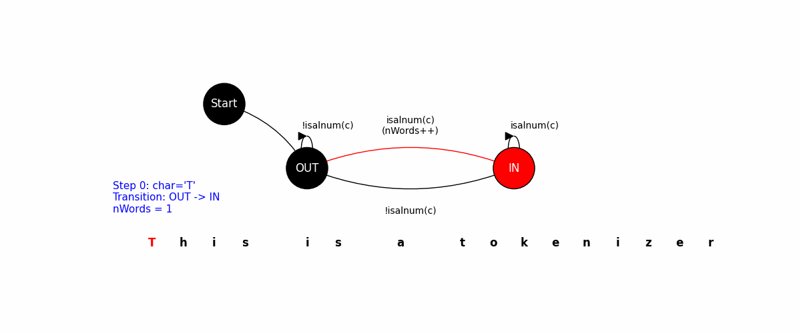

tokenizer209.c
readme
EthicsOath.pdf
The purpose of this assignment is to help you learn or review (1)
the fundamentals of the C programming language, and (2) use of the
GNU/Unix programming tools,
especially bash, vscode (or any editor of your choice),
and gcc209.
Make sure you study the course policy web page before doing this assignment or any of the EE 209 assignments. In particular, note that you may consult with the course instructors, lab TAs, mailing list, etc. while doing assignments, as prescribed by that web page. However, there is one exception...
Your task is to write a C program named tokenizer209 that
prints the number of newlines, words, and characters in the input text
fed from standard input to standard ouput. The program behaves
similarly to Linux wc, but tokenizer209
counts the number of words, the number of sentences, and the number of characters in the input text.
Your program should read characters from the standard input stream, and write the output to the standard output stream . Specifically, your program should (1) read text from the standard input stream, (2) write the number of words, sentences, and characters in the input text to the standard output stream. A typical execution of your program from a shell might look like this:
The output (13 3 300) indicates that there are 13 words,
3 sentences, and 300 characters in the file, somefile.txt.
Here are a few rules.
0 0 0.
The following examples display the standard output stream corresponding to each standard input stream. Note that "s" represents a space character, and "n" represents a newline character.
| Standard Input Stream | Standard Output Stream |
|---|---|
abcsghin
|
2s1s8n
|
abc0.sghin
|
2s2s10n
|
0000nnabcd?
|
2s1s11n
|
At the end of your main function, your program should
return EXIT_SUCCESS or, equivalently 0. Note that
EXIT_SUCCESS is defined in the standard header
file, stdlib.h.
Your program should work for standard input lines of any length whose number of characters is less than 2 billion characters.
Your task is to implement a program based on the provided deterministic finite state automaton (DFA, alias FSA). The DFA concept is described in Section 5.1 of the book Introduction to Programming (Sedgewick and Wayne). That book section is available through the web at http://introcs.cs.princeton.edu/java/51language/. Briefly, a DFA is a state machine to recognize patterns and process strings in formal languages. It consists of a finite set of states, and transitions between those states based on input symbols.
For example, the following DFA implements a program for counting words in the input text. The program begins by initializing the state to OUT(i.e. OUT of word). It then reads characters from the standard input stream. If a character is a letter or digit (by calling isalnum() function), the state transitions to IN(i.e. IN of word); otherwise, it switches to OUT. When the state changes from OUT to IN, the word count is incremented.
For example, when the program counts words in the sentence "This is a tokenizer", we can visualize the state transitions like below. When the program reads an alphanumeric character, it transitions from OUT to IN, incrementing the word count.

To implement the above DFA in C, we can use the following code:
The program reads characters from the standard input stream one by one. Based on the current state, it checks whether the current character is an alphanumeric character to determine the next state. If the condition is met, the program transitions to the corresponding state. This process continues until the end of the input stream.
You will be provided with a DFA for this assignment. Your task is to implement the described functionalities using the given DFA. The DFA for the tokenizer program would look like this:
O.W represents Out of Word, I.W represents In a Word, E.S represents End of Sentence. The program begins in the O.W state. When it reads a letter or digit, it transitions to the I.W state and increments the word count. If it encounters a period, question mark, or exclamation point while in the I.W state, it transitions to the E.S state.
Note that if the program encounters a period, question mark, or exclamation point while in the O.W state, it should transition to the E.S only if the word count in the current sentence is larger than 0.
After entering the E.S state, it remains in the E.S state until it encounters a non-space character and non-punctuation character. A space character is recognized by the isspace(c) function, which includes form-feed ('\f'), newline ('\n'), carriage return ('\r'), tab ('\t'), and vertical tab ('\v'). If the next character is a alphanumeric, it transitions to the I.W state; otherwise, it transitions to the O.W state.
Note that the program increments the character count for each read character.
You should create your program on the lab machines cluster using bash, vscode(or any editor of your choice), and gcc209.
You are only allowed to use the following libraries in your program: <stdio.h>, <ctype.h>, <assert.h>, <stdlib.h>, and <stdbool.h>.
Use any editor (e.g., vscode) to create source code in a file named tokenizer209.c that implements the DFA.
Use the gcc209 command to preprocess, compile, assemble, and link your program. Perform each step individually, and examine the intermediate results to the extent possible.
Execute your program multiple times on various input files that test all logical paths through your code.
We have provided several files that you require for this assignment.
(1) Download a tar.gz file to your directory.
You will find sampletokenizer209, test files, and several utilities.
(2) sampletokenizer209 is an executable version of a correct assignment solution. Your program should write exactly (character for character) the same data to the standard output stream as sampletokenizer209 does. You should test your program using commands similar to these:
The Unix diff command finds
differences between two given files. diff output1
output2 produces output, then sampletokenizer209 and your
program have written different characters to the standard output
stream.
You also can test your program against its own source code using a command sequence such as this:
readme File and an Ethics documentUse an editor to create a text file named readme (not readme.txt, or README, or Readme, etc.) that contains:
Descriptions of your code should not be in the readme file. Instead they should be integrated into your code as comments.
Your readme file should be a plain text file. Don't create your readme file using Microsoft Word, Hangul (HWP) or any other word processor.
For every assignment submission, you must submit your own Ethics document that pledges that you did not violate any rules of course policy or any rules of ethics enforced by KAIST while doing this assignment.
Please edit an Ethics document for assignment 1 and submit it along with other files. Please write the assignment number, your name, sign on it, and make it into a PDF file (you can convert it into the PDF format in the FILE menu of MS Word).
Your submission should include your tokenizer209.c file and your readme file.
In your working directory, tar your submission file by issuing the following command on a lab machine (assuming your ID is 20241234):
Upload your submission file (20241234_assign1.tar.gz) to our KLMS assignment submission link. We do not accept e-mail submission (unless KLMS is down).
Please follow the same procedure for the future assignments.
Your submission file should look like this:
STUDENT_ID in your project directory with your student id.
Then, use a given script to check your submission file before you submit.We will grade your work on two kinds of quality: quality from the user's point of view, and quality from the programmer's point of view. To encourage good coding practices, we will deduct points if gcc209 generates warning messages.
From the user's point of view, a program has quality if it behaves as it should. The correct behavior of your program is defined by the previous sections of this assignment specification, and by the behavior of the given sampletokenizer209 program.
From the programmer's point of view, a program has quality if it is well styled and thereby easy to maintain. In part, style is defined by the rules given in The Practice of Programming (Kernighan and Pike), as summarized by the Rules of Programming Style document. For this assignment we will pay particular attention to rules 1-24. These additional rules apply:
c might indicate that the variable is of type char, i might indicate int, pc might mean char*, ui might mean unsigned int, etc. But it is fine to use another style -- a style that does not include the type of a variable in its name -- as long as the result is a clear and readable program.main function -- should begin with a comment that describes what the function does from the point of view of the caller. (The comment should not describe how the function works.) It should do so by explicitly referring to the function's parameters and return value. The comment also should state what, if anything, the function reads from the standard input stream or any other stream, and what, if anything, the function writes to the standard output stream, the standard error stream, or any other stream. Finally, the function's comment should state which global variables the function uses or affects. In short, a function's comments should describe the flow of data into and out of the function.As prescribed by Kernighan and Pike style rule 25, generally you should avoid using global variables. Instead all communication of data into and out of a function should occur via the function's parameters and its return value. You should use ordinary call-by-value parameters to communicate data from a calling function to your function. You should use your function's return value to communicate data from your function back to its calling function. You should use call-by-reference parameters to communicate additional data from your function back to its calling function, or as bi-directional channels of communication.
However, call-by-reference involves using pointer variables, which we have not discussed yet. So for this assignment you may use global variables instead of call-by-reference parameters. (But we encourage you to use call-by-reference parameters.)
In short, you should use ordinary call-by-value function parameters and function return values in your program as appropriate. But you need not use call-by-reference parameters; instead you may use global variables. In subsequent assignments you should use global variables only when there is a good reason to do so.